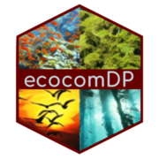

ecocomDP 
Overview
Tools to create, use, and convert ‘ecocomDP’ datasets. ‘ecocomDP’ is a dataset design pattern for harmonizing ecological community surveys in a research question agnostic format, from source datasets published across multiple repositories, and with methods that keep the derived datasets up-to-date as the underlying sources change. Described in O’Brien et al. (2021), https://doi.org/10.1016/j.ecoinf.2021.101374.
Installation
Get the latest CRAN release:
install.packages("ecocomDP")Get the latest development version:
# install.packages("remotes")
remotes::install_github("EDIorg/ecocomDP", ref = "development")Authentication
Accessing data from the Environmental Data Initiative (EDI) repository requires an API key.
1. Obtain an EDI API Key
- Visit the EDI Identity and Access Manager (IAM) and log in (or create a free account).
- Navigate to the Access Keys page.
- Generate a new API key (or copy an existing key).
2. Configure EDI_API_KEY in R
Configure your API key using any of the following methods:
Option A: Persistent Configuration (Recommended)
Add EDI_API_KEY to your user-level .Renviron file so it is loaded automatically in every R session:
# Open your .Renviron file:
usethis::edit_r_environ()
# Add this line, save the file, and restart R:
EDI_API_KEY="your_api_key_here"Option B: In-Session via Sys.setenv()
Set the key in your current R session before making API calls:
Sys.setenv(EDI_API_KEY = "your_api_key_here")Option C: In-Session via EDIutils
EDIutils::login(key = "your_api_key_here")Getting help
Use GitHub Issues for bug reporting, feature requests, and general questions/discussions. When filing bug reports, please include a minimal reproducible example.
Contributing
Community contributions are welcome! Please reference our contributing guidelines for details.
Please note that this project is released with a Contributor Code of Conduct. By participating in this project you agree to abide by its terms.